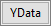
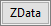

Hilfsmittel Datenkoordinaten
DataReader
Zusammenfassung
Die Datenkoordinaten  sind ein untersuchendes Hilfsmittel, das das Fenster Dateninfo verwendet, um Informationen über einen ausgewählten Datenpunkt in einem Diagramm anzuzeigen. Es kann grundsätzlich alles, was im Arbeitsblatt in Verbindung mit einem gezeichneten Datenpunkt enthalten ist, im Fenster Dateninfo angezeigt werden. Dies schließt Koordinatenwerte, Spaltenheader und sogar in Zellen eingebettete Bilder mit ein. Zusätzlich können Sie das Fenster benutzerdefiniert anpassen, um numerische Werte mit Hilfe eines benutzerdefinierten Formats (z. B. Datum-Zeit, Längen-/Breitengrad etc.) anzuzeigen oder die Hintergrundfarbe des Fenster zu ändern, einen Fenstertitel hinzuzufügen etc.
sind ein untersuchendes Hilfsmittel, das das Fenster Dateninfo verwendet, um Informationen über einen ausgewählten Datenpunkt in einem Diagramm anzuzeigen. Es kann grundsätzlich alles, was im Arbeitsblatt in Verbindung mit einem gezeichneten Datenpunkt enthalten ist, im Fenster Dateninfo angezeigt werden. Dies schließt Koordinatenwerte, Spaltenheader und sogar in Zellen eingebettete Bilder mit ein. Zusätzlich können Sie das Fenster benutzerdefiniert anpassen, um numerische Werte mit Hilfe eines benutzerdefinierten Formats (z. B. Datum-Zeit, Längen-/Breitengrad etc.) anzuzeigen oder die Hintergrundfarbe des Fenster zu ändern, einen Fenstertitel hinzuzufügen etc.
-
Origin-Version mind. erforderlich: Origin 2019
 |
Ab Origin 2019 können Sie die Datenpunktkoordinaten in einem 2D-Diagramm ablesen, indem Sie die Maus über den Datenpunkt bewegen. Dieser Tooltipp der Datenpunkte ist in hohem Maß anpassbar, wobei die Funktionalität des Fensters Dateninfo imitiert wird. Weitere Informationen finden Sie unter Tooltipps der Datenpunkte.
|
Was Sie lernen werden
Dieses Tutorial zeigt Ihnen, wie Sie:
- Das Fenster Dateninfo verwenden, um Informationen für einen ausgewählten Datenpunkt im Diagramm anzuzeigen.
- Passen Sie den Fensterinhalt Dateninfo an, um die Anzeige der Bilder (Tutorial 1) einzuschließen.
- Passen Sie den Fensterinhalt Dateninfo an, um die numerischen Daten mit Hilfe der benutzerdefinierten Formatierung (Tutorial 2) anzuzeigen.
Tutorial 1: Grundlagen
- Wählen Sie Datei: Öffnen..., um das Projekt Alkanes.opj im Verzeichnis<Origin-Ordner>\Samples\Data Exploration zu öffnen.
- Markieren Sie Spalte D in Book1 Sheet1 und wählen Sie Zeichnen > 2D: Punkt: Punktdiagramm, um ein neues Diagramm zu erstellen.
- Klicken Sie auf die Schaltfläche Datenkoordinaten auf der Symbolleiste Hilfsmittel und klicken Sie auf den Datenpunkt Isobutane im neuen Diagramm.
Sie werden sehen, dass das Fenster Dateninfo die X- und Y-Koordinaten des von Ihnen ausgewählten Datenpunkts anzeigt.
- Klicken Sie mit der rechten Maustaste auf das Fenster Dateninfo und wählen Sie Einstellungen im Kontextmenü, um den Dialog Einstellungen des Dateninfoberichts aufzurufen.
- Um den Namen von Mappe und Blatt aus dem Fenster Dateninfo zu entfernen, setzen Sie die Auswahlliste Berichtstitel auf Kein.
- Entfernen Sie im mittleren Teil des Dialogs die X-Koordinate, indem Sie auf <X> klicken und dann auf die Schaltfläche Entfernen. Tun Sie dasselbe mit der Y-Koordinate (<Y>).
- Klicken Sie in der oberen linken Ecke des Dialogs auf die Schaltfläche X-Daten und dann auf die Schaltfläche Y-Daten , um die X- und Y-Datenquelle hinzuzufügen. Beachten Sie die Verwenden des Datensatzes Long Names in der Vorschau.
- Alle Quellarbeitsblattspalten, die zum Fenster Dateninfo hinzugefügt werden können, sind im linken Bedienfeld aufgeführt. Markieren Sie die Spalten B, C, E, G und H und fügen Sie sie zum mittleren Bedienfeld durch Klicken auf die Schaltfläche Auswählen hinzu. Beachten Sie, dass die Vorschau bei diesem Punkt zeigt, dass unser Fenster zwei Spalten hat.
- Klicken Sie auf die Schaltfläche Neue Spalten anhängen, um eine dritte Spalte zu unserer Tabelle hinzuzufügen. Klicken Sie auf das Stiftsymbol oberhalb der dritten Spalte und setzen Sie im Dialog Spalteneinstellungen den Type = Einzelne Zelle und Quelle = J "Ball and stick model". Setzen Sie die Spaltenbreite auf 20 und klicken Sie auf OK. Klicken Sie auf das Stiftsymbol oberhalb der ersten und zweiten Spalte und setzen Sie die Spaltenbreite = 15 bzw. 20.
- Klicken Sie auf die Schaltfläche Schriftart, um den Dialog Schriftart für Tooltipp zu öffnen. Setzen Sie die Minimale Schriftgröße und die Maximale Schriftgröße auf 10 bzw. 16. Die Größe des Texts wird automatisch mit der Größe des Fensters Dateninfo angepasst. Beachten Sie, dass dies die Veränderung der Größe der Tabelle Dateninfo ebenfalls einschränkt. Setzen Sie die Schriftfarbe auf Königsblau und klicken Sie auf OK. Klicken Sie auf die Schaltfläche Hintergrund, setzen Sie den Hintergrund = Weiß und klicken Sie auf OK.
- Klicken Sie erneut auf die Schaltfläche Design und wählen Sie In Diagramm speichern im Ausklappmenü. Dies stellt sicher, dass Ihre Dialogeinstellungen für Dateninfo im aktiven Diagramm gespeichert werden. Klicken Sie dann auf OK, um den Dialog Einstellungen des Dateninfoberichts zu schließen.
- Passen Sie die Größe des Fensters Dateninfo an, indem Sie an einer Fensterecke ziehen. Beachten Sie, dass der Bereich der Schriftgröße, den wir zuvor festgelegt haben, die Anpassung der Fenstergröße begrenzt.
Tutorial 2: Benutzerdefininiertes numerisches Anzeigeformat
In diesem Tutorial erfahren wir, wie ein benutzerdefiniertes Anzeigeformat auf numerische Daten, die im Fenster Dateninfo angezeigt werden, angewendet wird.
- Drücken Sie F11, um das Lernzentrum zu öffnen. Klicken Sie auf die Registerkarte Diagrammbeispiele und suchen Sie nach dem Stichwort "Google Map Temperature". Klicken Sie doppelt auf das Beispiel, um diese Projektdatei zu öffnen. Sie enthält die folgende Karte der kontinentalen USA mit einer Überlagerung des Konturdiagramms durch die mittleren Januartemperaturen.
-
- Klicken Sie zum Öffnen des Dialogs Details Zeichnung doppelt auf Karte + Konturdiagramm. Klicken Sie auf die Registerkarte Farbpalette/Kontur und aktivieren Sie Datenpunkte zeigen. Klicken Sie auf OK. Was Sie jetzt sehen, sind die US-amerikanischen Städte, in denen die Januartemperaturdaten in der Überlagerung aufgezeichnet wurden. Vergrößern Sie das Fenster, so dass Sie eine gute Ansicht aller Streupunkte erhalten.
- Wählen Sie das Hilfsmittel Datenkoordinaten auf der Symbolleiste Hilfsmittel (Hinweis: Es befindet sich auf der geteilten Schaltfläche zusammen mit Datencursor
 und Datenmarkierer
und Datenmarkierer  ). Klicken Sie dann auf einen der Streupunkte auf der Kartenabbildung. Das Dateninfofenster sollte geöffnet werden und wie im folgenden Bild aussehen.
). Klicken Sie dann auf einen der Streupunkte auf der Kartenabbildung. Das Dateninfofenster sollte geöffnet werden und wie im folgenden Bild aussehen.
Die Informationen sind nicht sehr benutzerfreundlich. Deswegen werden wir das Fenster Dateninfo benutzerdefiniert anpassen, um nützlichere Informationen vermitteln zu können.
- Klicken Sie doppelt auf das Fenster Dateninfo, um den Dialog Einstellungen des Dateninfoberichts zu öffnen. Klicken Sie unter der Spalte Name im mittleren Bedienfeld auf und entfernen Sie nacheinander die <X>-, <Y>- und <Z>-Koordinaten aus dem mittleren Bedienfeld mit Hilfe der Schaltfläche Entfernen
 .
.
- Klicken Sie jetzt auf die Schaltflächen , und  in der oberen linken Ecke des Dialogs, um die X-, Y- und Z-Quelldaten, die mit der Spalte Langname beschriftet sind, ins mittlere Bedienfeld zu verschieben. Sie können das Ergebnis sehen, indem Sie sich die Vorschau rechts neben dem Dialog ansehen.
Zurzeit zeigt unsere Dateninfo zwei Spalten an, eine Spalte mit den Spaltenlangnamen (Longitude, Latitude, January) und eine zweite Spalte mit den numerischen Daten, die mit Longitude, Latitude, January verbunden sind. Wir werden nun diese Zahlen formatieren, so dass sie nicht einfach als generische Dezimalzahlen angezeigt werden.
- Klicken Sie auf die Schaltfläche Neue Spalten anhängen, um eine dritte Spalte zur Tabelle der Dateninfo hinzuzufügen. Klicken Sie dann auf das Stiftsymbol in der neu hinzugefügten Spalte, um den Dialog Spalteneinstellungen zu öffnen. Setzen Sie die Auswahlliste Typ auf Numerisches Anzeigeformat und klicken Sie auf OK.
-
- Klicken Sie auf die erste Zelle unter der Überschrift Numerisches Anzeigeformat. Ihnen wird ein Listenelement angezeigt, auf das Sie klicken können, um eine Liste der benutzerdefinierten Formatierungsoptionen zu zeigen. Beachten Sie, dass diese Liste nicht vollständig ist, sondern Vorschläge für benutzerdefinierte Formate enthält. Sie können außerdem direkt in dieses Feld tippen, um ein benutzerdefiniertes Format festzulegen.
-
- Geben Sie in der ersten Zeile des Listenelements Folgendes ein (Grad-Minuten Ost-West, mit Einheiten vor):
DM EWB
- Geben Sie in der zweiten Zeile des Listenelements Folgendes ein (Grad-Minuten Nord-Süd, mit Einheiten vor):
DM NSB
- Geben Sie in der dritten Zeile des Listenelements Folgendes ein (eine Dezimalstelle + Suffixzeichenkette "deg F"):
.1 "deg F"
- Klicken Sie auf die Schaltfläche Neue Spalten anhängen, um eine Spalte zur Tabelle der Dateninfo hinzuzufügen. Klicken Sie dann auf das Stiftsymbol in der neu hinzugefügten Spalte, um den Dialog Spalteneinstellungen zu öffnen. Setzen Sie die Auswahlliste Typ auf Einzelne Zelle, die Quelle auf A "City", die Spaltenbreite auf 30 und klicken Sie auf OK.
- Klicken Sie auf die Schaltfläche Design speichern und wählen Sie In Diagramm speichern, um die aktuelle Fensterkonfiguration der Dateninfo im Diagrammfenster zu speichern. Klicken Sie auf OK, um den Dialog zu schließen.
-